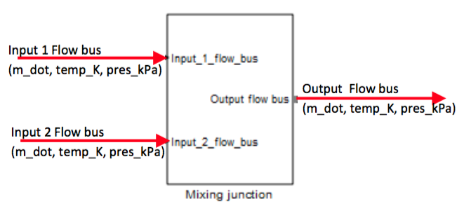
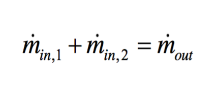
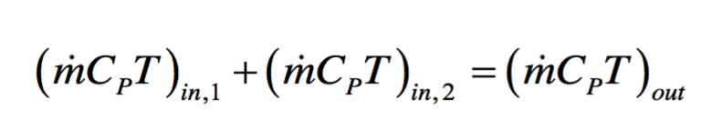
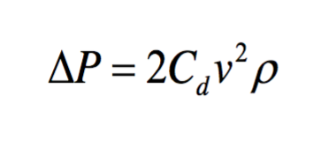
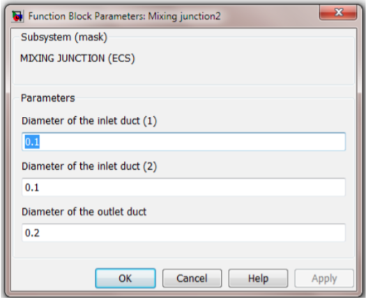

The mixing junction provides the mixing of two air streams at the same pressure. The Simulink model for the mixing junction is based on the conservation of mass and enthalpy of the two incoming fluid stream. The pressure drop across the mixing junction is obtained by determining the discharge coefficient across the mixing junction. It is assumed that the incoming fluid ducts have the same area of cross-section, and the outlet duct has twice the area of cross-section as the inlet ducts. The coefficient of discharge (Cd) is determined from ASHRAE Handbook: Fundamentals (2009). In Figure 5.10, a typical schematic of the mixing junction is shown. The conservation of mass and enthalpy is given by Eq. 5.1.15 and Eq. 5.1.16

Conservation of mass: (Eq 5.1.15)

Conservation of energy: (Eq 5.1.16)

Pressure loss: (Eq 5.1.17)

A screenshot of the mixing junction Simulink mask is shown below. It is a single tab mask with input fields for diameters of the ducts.

| Input | Units | Description |
|---|---|---|
| Input 1 flow bus: Input 1 flow bus: Input 1 flow bus: |
Kg/s K kPa |
Air flow from the upstream Air temperature Air pressure from upstream of the mixing junction |
| Input 2 flow bus: Input 2 flow bus: Input 2 flow bus: |
Kg/s K kPa |
Air flow from the upstream Air temperature Air pressure from upstream of the mixing junction |
| Output | Units | Description |
|---|---|---|
| Output flow bus: Output flow bus: Output flow bus: |
Kg/s K kPa |
Airflow rate from the mixing junction Air temperature Air pressure from the mixing junction |
Note: The mixing junction parameters such as the diameter of the ducts are defined through a mask parameter as shown in Figure 5.11.